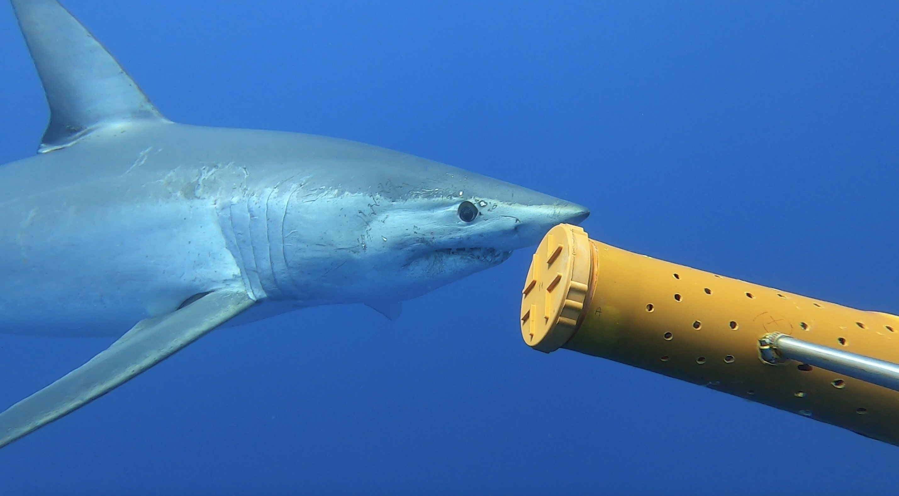
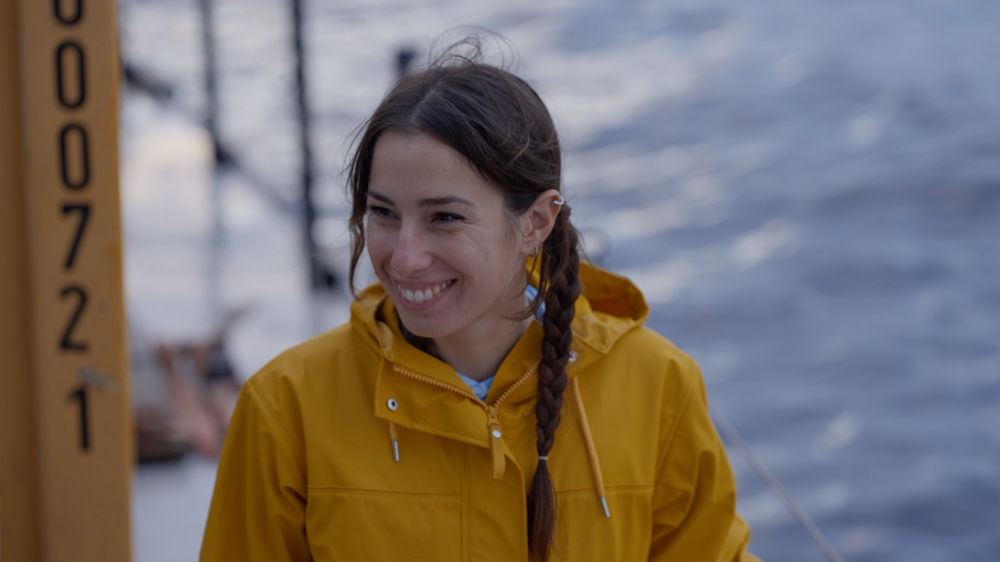
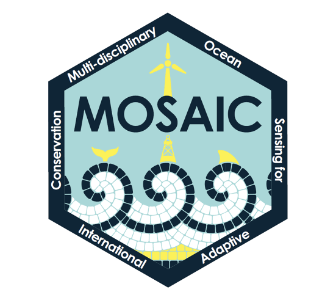
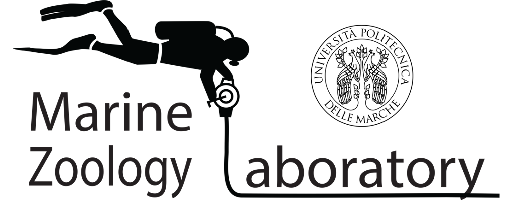
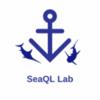

Marine ecologist working on large marine species, from the open sea to the seabed
Postdoctoral Researcher · Marine Laboratory, Queen's University Belfast



Postdoctoral Researcher on the MOSAIC project at the Marine Laboratory of Queen's University Belfast. My work has two parts:
Habitat association. Modelling where threatened, OSPAR-listed sharks, skates and rays occur in Irish and Northern Irish waters, and which habitats they are linked to.
Critical habitat. For target species such as the flapper skate, finding the sites they depend on, like egg-laying grounds, with AUV surveys of the seabed.
I am a marine ecologist and Postdoctoral Researcher at the Marine Laboratory of Queen's University Belfast, working on the MOSAIC project (Multi-disciplinary Ocean Sensing for Adaptive International Conservation). I identify critical areas for the conservation of elasmobranchs (sharks, rays and skates) across the waters of Ireland and Northern Ireland, combining ecological data from multiple monitoring techniques to support conservation planning, management and long-term monitoring.
My work combines quantitative methods with emerging monitoring technologies. I integrate field-based and molecular approaches, including telemetry, stereo- and mono-BRUVs, tissue sampling and environmental DNA, to study species distribution, habitat use, movement and ecological interactions at multiple spatial scales.
I hold a PhD in Life and Environmental Sciences (Doctor Europaeus) from Università Politecnica delle Marche, co-funded by Stazione Zoologica Anton Dohrn and developed with the SeaQL lab at Virginia Tech, on the distribution, connectivity and conservation of the white shark and the shortfin mako in the Mediterranean. Alongside my Northeast Atlantic work, I continue shark conservation research in the Mediterranean, to improve ecological knowledge and support evidence-based management of threatened species.
I am active in science communication and stakeholder engagement. I collaborate with sharkPulse Italia, take part in public events and work with ocean users and recreational fishers to promote marine conservation and citizen science. As Co-Chair of the IGFA EU-MED Conservation Committee, I work with the recreational fishing community on sustainable practices for large pelagic species, and I aim to strengthen dialogue among science, policy and stakeholders.
Effective marine conservation requires collaboration across disciplines, sectors and communities, linking research, management and society.
off the clock: hikingsurfingfreedivingphotographyfishingnature